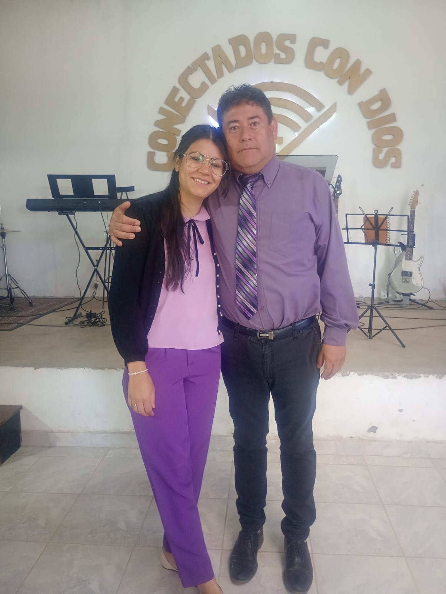

Adoración (GDA)
Guiamos a la congregación a conectarse con Dios a través de la música, el canto y un corazón rendido.
Generación de Adoradores (GDA) es una casa de fe donde nuestro mayor deseo es levantar el nombre de Jesús a través de la adoración apasionada y la palabra de Dios.
Creemos en una iglesia activa, unida y comprometida con transformar vidas en nuestra comunidad, dándole un lugar especial a cada generación.

Hay diferentes funciones, pero un mismo Dios que lo hace todo. Aqui tienes un lugar para servir.
Guiamos a la congregación a conectarse con Dios a través de la música, el canto y un corazón rendido.

Un espacio dinámico para adolescentes y jóvenes que buscan crecer en su fe, hacer amigos y marcar la diferencia.

La escuelita bíblica donde los más chicos aprenden la palabra de Dios de forma divertida, con juegos y amor.
Un momento a solas con Dios. Renová tus fuerzas cada mañana.
El mundo ruge con fuerza intentando moldear nuestros pensamientos, miedos y prioridades. Pero la palabra nos invita a no amoldarnos, sino a transformarnos mediante la renovación de nuestra mente. Dedicá los primeros 5 minutos de tu día a enfocar tu mirada en lo eterno, no en lo pasajero.
Caminar en tus propias fuerzas te va a cansar tarde o temprano. Dios no nos pide que seamos superhéroes, nos pide que dependamos de Él. Él da esfuerzo al cansado y multiplica las fuerzas al que no tiene ningunas. Si hoy te despertaste sin ganas, este es el momento de decirle: "Dios, voy con tus fuerzas, no con las mías".
Profundizá en la palabra de Dios con nuestras guías de estudio semanales.
"Mas la hora viene, y ahora es, cuando los verdaderos adoradores adorarán al Padre en espíritu y en verdad..." — Juan 4:23
En este estudio profundizamos en lo que significa adorar desde el corazón, analizando el diseño original que Dios pensó para sus hijos.
Descargar Guía PDF"Lámpara es a mis pies tu palabra, y lumbrera a mi camino." — Salmo 119:105
Descubrí herramientas prácticas para armar tu devocional diario, mantener una lectura constante y entender las escrituras de forma simple.
Descargar Guía PDFTe esperamos para compartir juntos un tiempo especial.
| Día | Reunión | Hora |
|---|---|---|
| Domingos | Reunión General de Adoración | 19:00 hs |
| Miércoles | Estudio Bíblico / Oración | 20:00 hs |
| Sábados | Reunión de Jóvenes | 18:30 hs |
Informacion importante para la familia GDA.
Este miércoles nos reunimos para orar por las familias, la ciudad y los proyectos de la iglesia.
Un fin de semana entero dedicado a capacitarnos y buscar la presencia de Dios junto a invitados especiales.
Momentos compartidos en nuestra casa.


¿Tenés alguna consulta o pedido de oración? Escribinos.
Dirección:Ingeniero Barrera 2350, Malargüe, Mendoza, Argentina
Teléfono / WhatsApp: 5492604313196
Email: a confirmar
Ingreso reservado para el equipo autorizado de GDA.
Sesión de administrador activa.